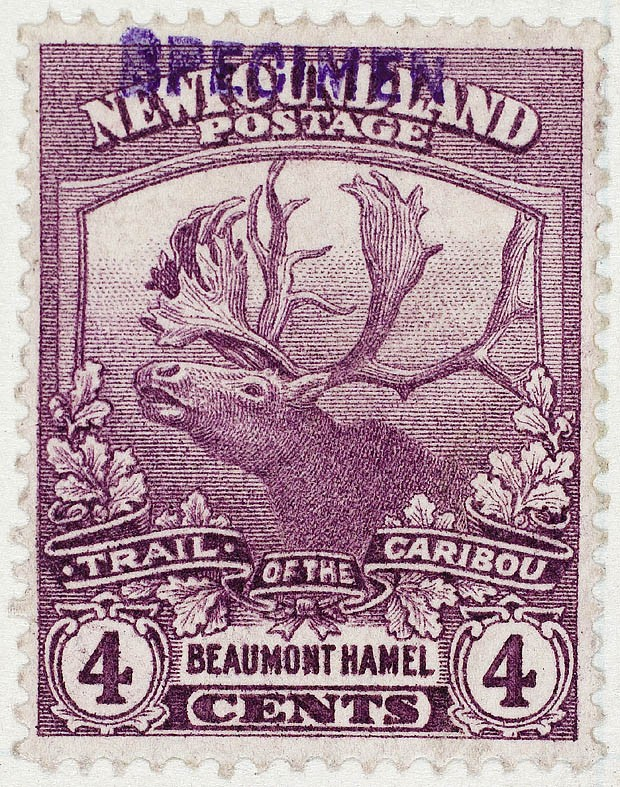
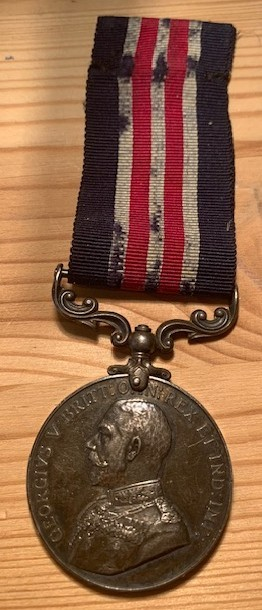
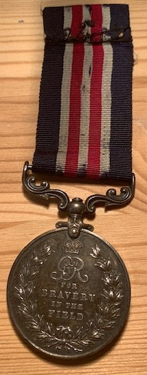
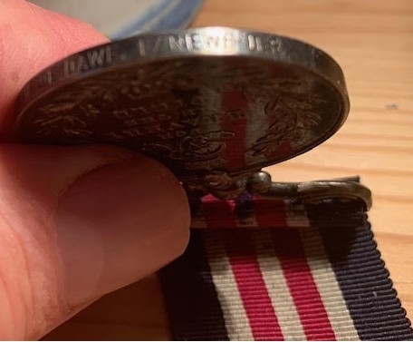

Trail of Caribou - Beaumont Hamel Stamp
Dominion of Newfoundland Post (opens in a new tab), Public domain, via Wikimedia Commons
The Newfoundland Regiment was part of the British 29th Division, specifically the 88th Brigade.
On 16 August 1917, the Newfoundlanders crossed the Steenbeek and advanced towards German positions near Langemarck. They faced terrible mud, flooded trenches and machine-gun fire.
The regiment achieved its assigned objectives, but suffered 103 casualties, including 27 fatal casualties.
My grandfather, Private Frank Dawe, service number 3011, was among the Newfoundland soldiers awarded the Military Medal for bravery during the Battle of Langemarck. More than ten Military Medals were awarded to men of the regiment for their actions in the battle.
Frank Dawe’s Military Medal



Frank Dawe’s Military Medal, showing the front, reverse and naming on the rim. Photographs by Peter Merrilees McCann. McCann family archive. Reproduced with permission.
![Typed citation over a faint sepia photograph of a caribou standing on a rock among trees. It reads: Dawe, Frank, Regt. No. 3011. Military Medal. London Gazette, October 18th 1918. Action Date, August 16th 1917 – Steenbeek. For bravery and distinguished service in the field. In the attack on the enemy near Langemarck on August 16th 1917, as a Lewis gunner when the rest of the team were knocked out by a shell, he took the gun and two carriers into action, also retaining his rifle and fixed bayonet. The going at this point was particularly heavy. He however held on to the gun and arrived at the objective in time to give valuable assistance to the people on the left who were hung up by a block-house.](../assets/images/newfoundland-regiment/frank-dawe-military-medal-citation.jpg)
Frank Dawe’s Military Medal citation, preserved in the McCann family archive. Original compiler and background photographer unidentified.